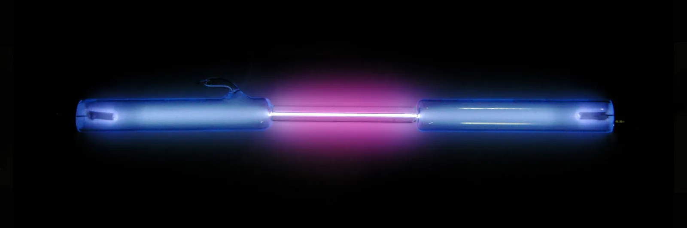
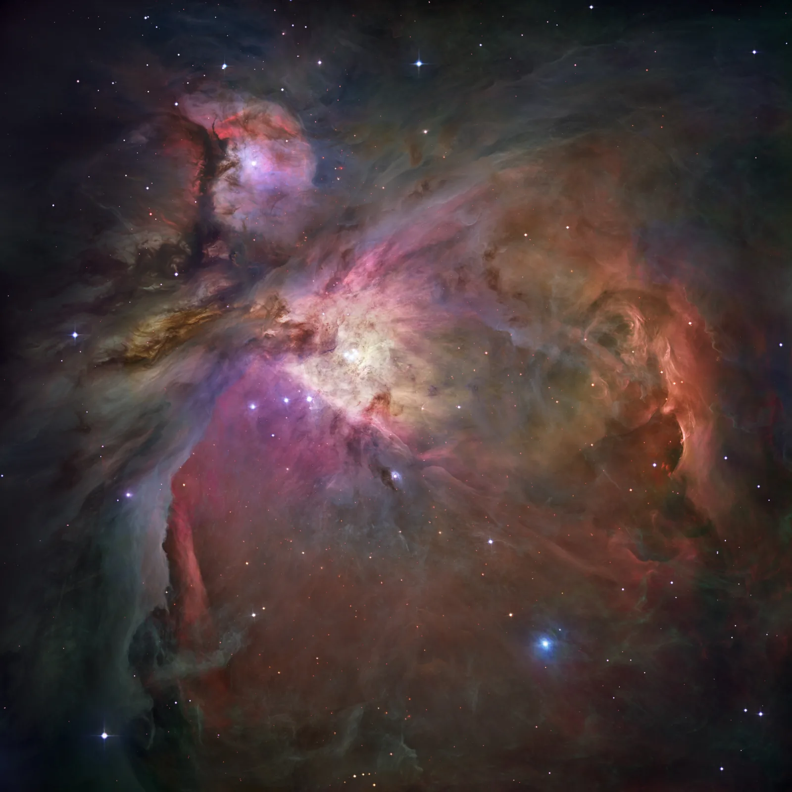

Vetyatomin energiatasot ja Bohrin malli
Miksi vetyä sisältävän lampun valo hajoaa hilassa vain neljäksi selvästi näkyväksi värilliseksi viivaksi? Miksi viivojen aallonpituudet ovat juuri $656\,\text{nm}$, $486\,\text{nm}$, $434\,\text{nm}$ ja $410\,\text{nm}$?
Pohjatiedot
- Fotonin energia on $E = hf = \tfrac{hc}{\lambda}$. Energian voi ilmoittaa elektronivoltteinaluku Valosähköinen ilmiö ja fotoni
- Kaasun viivaspektri kertoo, että atomin energia voi olla vain tietyn suuruinenluku Spektrit paljastavat atomin energiatasot
Ydinpolku: tee vaiheet järjestyksessä. Valinnainen-tehtävät ovat lisäharjoittelua. Valinnaisia tehtäviä on 6.
Luvun tärkeät käsitteet Vapaaehtoinen
Tutustu luvun tärkeisiin käsitteisiin. Voit kirjoittaa niiden merkitykset sinulle vahvimmalla kielellä tai useammalla kielellä.
- Perustila
- Atomin alin energiatila.
- Viritystila
- Perustilaa ylempi energiatila. Viritystilassa atomilla on enemmän energiaa kuin perustilassa.
- Ionisaatioenergia
- Energia, joka tarvitaan elektronin irrottamiseen atomista perustilasta.
- Bohrin malli
- Historiallinen vetyatomin malli, jossa elektroni kiertää ydintä vain sallituilla radoilla. Se antaa vedylle oikeat energiat, mutta ratoja ei ole.
Pohdinta
Pimennetyssä luokassa on ohut lasiputki, jossa on vetykaasua. Kun putkeen kytketään jännite, se hehkuu vaaleanpunaisen violettina. Valoa katsotaan hilan läpi. Tasaisen sateenkaaren sijaan näkyy vain neljä kapeaa viivaa: punainen, syaani, sininen ja violetti. Viivojen paikat ovat aina samat, olipa putki missä tahansa laboratoriossa.
Mikä vetyatomissa päättää, että se lähettää juuri nämä neljä aallonpituutta? Voiko aallonpituudet laskea?
Valinnainen Kertaa: fotonin energia
Ennusta
Tee ennusteet ennen tutkimista 3 kysymystä
Ennuste 1: yhä ylemmiltä tasoilta tasolle 2
Valinnainen Ennuste 2: perustilaan
Ennuste 3: liian suuri fotoni
Tutki
Valitse emissio eli valon lähettäminen tai absorptio eli valon imeytyminen. Aseta tasot ja paina painiketta. Seuraa elektronia Bohrin kuvassa ja energiatasokaaviossa. Katso, mihin viiva syntyy spektriin.
Simulaatio
Käyttöohje
Tilanne valitsee emission tai absorption. Emissiossa valitset ylemmän tason $n_\text{y}$ ($2$–$6$) ja alemman tason $n_\text{a}$ ($1$–$3$). Sitten painat Siirtymä. Elektroni putoaa, fotoni lähtee, ja sen viiva jää spektrinauhaan. Absorptiossa valitset atomin tilan $n_\text{a}$ ja saapuvan fotonin energian $hf$. Sitten painat Lähetä fotoni. Lukemissa näkyvät tasojen energiat, fotonin energia ja aallonpituus sekä absorption tulos. Spektrinauhassa on kolme osaa: ultravioletti, näkyvä valo ja infrapuna. Jokaisella osalla on oma aallonpituusasteikkonsa. Oranssi kolmio näyttää nykyisen fotonin paikan. Tyhjennä spektri poistaa kerätyt viivat. Nopeus muuttaa vain animaation tahtia.
Mallin oletukset
Tasojen energiat ovat annettu tieto $E_n = -\tfrac{13{,}6\,\text{eV}}{n^2}$. Energian nollakohta on vapaa, levossa oleva elektroni. Bohrin kuvan ratojen säteet ovat kaavamaisia. Bohrin mallissa säde kasvaa kuten $n^2$. Energiatasokaavio on mittakaavassa tasosta $n = 2$ ylöspäin. Tasojen $1$ ja $2$ väliä on lyhennetty. Absorptiossa fotonin energian on oltava tasojen erotus $0{,}03\,\text{eV}$:n tarkkuudella. Malli laskee tasot $n = 30$ asti, vaikka kuvissa näkyy kuusi. Lähellä arvoa $13{,}6\,\text{eV}$ ylemmät tasot ovat niin tiheässä, että perustilasta jokainen liukusäätimen arvo välillä $13{,}20$–$13{,}55\,\text{eV}$ osuu jonkin tason erotukseen ja absorboituu. Jokainen fotoni osuu atomiin, joka on tilassa $n_\text{a}$. Arvot ovat mallin laskemia, eivät mittauksia.
Laskennan selitys
Emissiossa fotonin energia ja aallonpituus ovat
$$hf = E_\text{y} - E_\text{a}, \qquad \lambda = \frac{hc}{E_\text{y} - E_\text{a}},$$
missä energiaero muunnetaan jouleiksi kertomalla luvulla $1{,}602 \cdot 10^{-19}\,\tfrac{\text{J}}{\text{eV}}$. Absorptiossa malli etsii tason $m > n_\text{a}$, jolle $E_m - E_\text{a} = hf$. Jos $hf \geq -E_\text{a}$, elektroni irtoaa. Sen liike-energia on silloin $E_\text{k} = hf + E_\text{a}$.
Koe 1: Balmerin sarja
Testaa ennuste 1. Alempi taso on $n_\text{a} = 2$. Muuta vain ylempää tasoa. Kirjaa fotonin energia ja aallonpituus lähtötasoilla $3$, $4$, $5$ ja $6$. Paina välillä Siirtymä, niin näet viivan syntyvän spektriin. Laske, kuinka paljon aallonpituus muuttuu askeleesta toiseen.
Alkutila: tilanne: emissio, alempi taso $n_\text{a}$ = $2$, ylempi taso $n_\text{y}$ = $3$. Vakiona: tilanne, alempi taso $n_\text{a}$. Muutetaan: ylempi taso $n_\text{y}$.
| ylempi taso $n_\text{y}$ | $hf$ $(\text{eV})$ | $\lambda$ $(\text{nm})$ |
|---|
Valinnainen Koe 2: siirtymät perustilaan
Testaa ennuste 2. Alempi taso on nyt perustila $n_\text{a} = 1$. Muuta ylempää tasoa ja kirjaa ainakin siirtymät $2 \to 1$ ja $3 \to 1$. Mihin spektrinauhan osaan viivat osuvat?
Alkutila: tilanne: emissio, alempi taso $n_\text{a}$ = $1$, ylempi taso $n_\text{y}$ = $2$. Vakiona: tilanne, alempi taso $n_\text{a}$. Muutetaan: ylempi taso $n_\text{y}$.
| ylempi taso $n_\text{y}$ | $hf$ $(\text{eV})$ | $\lambda$ $(\text{nm})$ |
|---|
Koe 3: mitkä fotonit perustila absorboi?
Testaa ennuste 3. Atomi on perustilassa $n_\text{a} = 1$. Muuta vain saapuvan fotonin energiaa. Kirjaa ainakin energiat $10{,}20\,\text{eV}$, $11{,}00\,\text{eV}$, $12{,}10\,\text{eV}$ ja $14{,}00\,\text{eV}$. Paina välillä Lähetä fotoni. Sarake taso jälkeen kertoo, mille tasolle elektroni päätyi.
Alkutila: tilanne: absorptio, atomin tila $n_\text{a}$ = $1$, fotonin energia $hf$ = $10{,}2\,\text{eV}$. Vakiona: tilanne, atomin tila $n_\text{a}$. Muutetaan: fotonin energia $hf$.
| fotonin energia $hf$ | taso jälkeen | $E_\text{k}$ $(\text{eV})$ |
|---|
Johtopäätös: mikä määrää viivat?
Kirjoita taulukoidesi perusteella: miksi Balmerin sarjan aallonpituudet lyhenevät ja tihenevät, kun lähtötaso nousee? Mitkä fotonit perustilassa oleva atomi absorboi?
Mallivastaus
Fotonin energia on tasojen erotus $E_\text{y} - E_\text{a}$. Kun lähtötaso nousee, erotus kasvaa ($1{,}89\,\text{eV}$, $2{,}55\,\text{eV}$, $2{,}86\,\text{eV}$, $3{,}02\,\text{eV}$) ja aallonpituus lyhenee ($656\,\text{nm}$, $486\,\text{nm}$, $434\,\text{nm}$, $410\,\text{nm}$). Erot pienenevät, koska ylemmät tasot ovat lähellä toisiaan. Valinnaisen kokeen 2 arvot näyttävät lisäksi, että perustilaan päättyvien siirtymien energiat ovat yli $10\,\text{eV}$ ja aallonpituudet alle $122\,\text{nm}$. Siirtymät ovat siis ultraviolettia. Perustilan atomi absorboi vain fotonit, joiden energia on tasojen erotus ($10{,}20\,\text{eV}$, $12{,}10\,\text{eV}$). Fotonia $11{,}00\,\text{eV}$ se ei absorboi. Fotoni, jonka energia on vähintään $13{,}6\,\text{eV}$, ionisoi atomin, ja ylimäärä jää elektronin liike-energiaksi. Arvot ovat mallin laskemia tasoista $E_n = -\tfrac{13{,}6\,\text{eV}}{n^2}$.
Arvioi oma vastauksesi
Merkitse kohdat, jotka sinun vastauksessasi jo on.
Kertaa asia teoriatiivistelmästä ja harjoittele tehtävillä.
Teoriatiivistelmä
Ydinajatus
Vetyatomin energia on kvantittunut
Vetyatomissa on yksi protoni ja yksi elektroni. Atomin energia on elektronin liike-energian ja sähköisen potentiaalienergian summa. Tämä energia voi olla vain tietyn suuruinen. Sallittuja energioita sanotaan energiatasoiksi. Tasot numeroidaan kokonaisluvuilla $n = 1, 2, 3, \ldots$ Energian nollakohdaksi valitaan tilanne, jossa elektroni on levossa kaukana protonista. Silloin elektroni on irti atomista. Sidotun elektronin energia on siksi negatiivinen. Elektronin irrottaminen vaatii nimittäin energiaa.
Alin taso $n = 1$ on perustila. Sen energia on $-13{,}6\,\text{eV}$. Ylemmät tasot $n = 2, 3, \ldots$ ovat viritystiloja. Viritystilassa atomilla on enemmän energiaa kuin perustilassa. Ylemmät tasot ovat yhä lähempänä toisiaan ja lähestyvät nollaa. Elektronin irrottaminen perustilasta vaatii energian, jota sanotaan ionisaatioenergiaksi. Vedyn ionisaatioenergia on $13{,}6\,\text{eV}$. Viritystilassa atomi pysyy tavallisesti vain noin $10^{-8}\,\text{s}$. Sen jälkeen se palaa alemmalle tasolle.

Siirtymässä syntyy tai katoaa fotoni
Kun elektroni siirtyy ylemmältä tasolta alemmalle, atomin energia pienenee. Energian erotus lähtee atomista yhtenä fotonina. Energia säilyy, joten fotonin energia on tasojen erotus. Tasoja on vain tietyt, joten myös erotuksia on vain tietyt. Siksi vety lähettää vain tiettyjä aallonpituuksia. Sen spektri on viivaspektri eli siinä on erillisiä viivoja.
Siirtymät, jotka päättyvät samalle alemmalle tasolle, muodostavat sarjan. Tasolle $n = 1$ päättyvät siirtymät ovat Lymanin sarja. Ne ovat suuria energiaharppauksia, ja niiden fotonit ovat ultraviolettia. Tasolle $n = 2$ päättyvät siirtymät ovat Balmerin sarja. Se tuottaa vedyn neljä kirkasta näkyvää viivaa. Seuraavat viivat ($397\,\text{nm}$, $389\,\text{nm}$, …) ovat himmeitä. Ne ovat näkyvän valon violetilla reunalla, jossa silmä on epäherkkä. Tasolle $n = 3$ päättyvät siirtymät ovat Paschenin sarja, ja ne ovat infrapunaa.
Absorptio eli valon imeytyminen on käänteinen tapahtuma. Atomi absorboi fotonin vain, jos fotonin energia on täsmälleen jonkin tasoparin erotus. Silloin elektroni siirtyy ylemmälle tasolle. Fotoni, jonka energia on jokin muu, menee atomin ohi eikä absorboidu. Yksi poikkeus on ionisaatio. Jos fotonin energia on vähintään ionisaatioenergia, fotoni voi irrottaa elektronin. Ylimääräinen energia jää vapaan elektronin liike-energiaksi.
Bohrin malli historiallisena välivaiheena
Tanskalainen Niels Bohr esitti vuonna 1913 mallin. Mallin mukaan elektroni kiertää protonia ympyräradalla, mutta vain tietyillä sallituilla radoilla. Sallitulla radalla elektroni ei säteile. Klassisen fysiikan mukaan kiertävän varauksen pitäisi menettää energiaa säteilynä, mutta Bohrin mallissa näin ei tapahdu. Valoa syntyy vain, kun elektroni siirtyy radalta toiselle. Fotonin energia on silloin ratojen energioiden erotus. Radan säde kasvaa kuten $n^2$. Perustilan säde on noin $0{,}053\,\text{nm}$. Radan $n = 2$ säde on neljä kertaa ja radan $n = 3$ säde yhdeksän kertaa niin suuri.
Malli oli suuri edistysaskel. Siitä saadut vedyn energiatasot ovat samat kuin spektriviivoista mitatut. Malli selitti myös vetyatomin koon ja ionisaatioenergian. Mallilla on kuitenkin rajansa. Se toimii vain atomeille ja ioneille, joissa on yksi elektroni. Se ei myöskään kerro, miksi jotkin spektriviivat ovat kirkkaampia kuin toiset. Elektronilla ei todellisuudessa ole rataa. Luvussa Aaltomekaaninen atomimalli ja orbitaalit elektronin paikkaa kuvataan todennäköisyyksillä. Energiatasot säilyvät uudessakin mallissa, mutta kiertoradat jäävät pois.

Vetyatomin energiatasot ja siirtymän fotoni
Vetyatomin energiatasot ovat
$$E_n = -\frac{13{,}6\,\text{eV}}{n^2}$$
missä $E_n$ on tason $n$ energia ja $n = 1, 2, 3, \ldots$ on tason järjestysluku. Tämä lauseke on tässä annettu tieto. Se vastaa mitattua vedyn spektriä.
Elektroni siirtyy ylemmältä tasolta, jonka energia on $E_\text{y}$, alemmalle tasolle, jonka energia on $E_\text{a}$. Syntyvän fotonin energia ja aallonpituus ovat
$$\begin{aligned} hf &= E_\text{y} - E_\text{a} \\ \lambda &= \frac{hc}{E_\text{y} - E_\text{a}} \end{aligned}$$
missä $h = 6{,}626 \cdot 10^{-34}\,\text{J}\,\text{s}$ on Planckin vakio, $f$ on fotonin taajuus, $c = 2{,}998 \cdot 10^{8}\,\text{m/s}$ on valon nopeus ja $\lambda$ on aallonpituus. Absorptiossa samat kaavat antavat sellaisen fotonin, joka nostaa elektronin tasolta $E_\text{a}$ tasolle $E_\text{y}$. Energiat lasketaan ensin elektronivoltteina. Erotus muunnetaan jouleiksi sijoittamalla $1\,\text{eV} = 1{,}602 \cdot 10^{-19}\,\text{J}$.
| Sarja | Alempi taso | Alue | $\lambda$ (nm) |
|---|---|---|---|
| Lyman | $n = 1$ | ultravioletti | $91{,}2$–$122$ |
| Balmer | $n = 2$ | näkyvä ja lähi-UV | $365$–$656$ |
| Paschen | $n = 3$ | infrapuna | $821$–$1876$ |
Kunkin sarjan pisin aallonpituus tulee siirtymästä lähimmältä ylemmältä tasolta. Lyhin aallonpituus on sarjan raja. Se tulee siirtymästä, joka alkaa vapaasta elektronista. Tasot tihenevät ylöspäin, joten sarjan viivat tihenevät rajaa kohti.
Yleinen virhekäsitys
Moni laskee fotonin energian yhden tason energiasta. Esimerkiksi siirtymälle $4 \to 2$ otetaan arvo $|E_4| = 0{,}85\,\text{eV}$. Silloin aallonpituudeksi tulisi noin $1460\,\text{nm}$. Siirtymä tuottaa kuitenkin syaanin viivan $486\,\text{nm}$. Fotoni ei kanna yhden tason energiaa vaan tasojen erotuksen $E_\text{y} - E_\text{a}$. Tason energia on negatiivinen, mutta se ei tarkoita, että energiaa puuttuisi. Se kertoo, kuinka paljon energiaa elektronin irrottaminen vaatii.
Toinen virhe on pitää Bohrin ratoja todellisina kiertoratoina, joilla elektroni kiertää kuin planeetta. Bohrin malli antaa vedylle oikeat energiat. Elektronin rataa ei kuitenkaan voi havaita, eikä sitä ole nykyisessä atomimallissa.
Tiivistelmä
- Vetyatomin energia on kvantittunut: $E_n = -\tfrac{13{,}6\,\text{eV}}{n^2}$. Perustila on $n = 1$ ja viritystilat ovat $n \geq 2$. Ionisaatioenergia perustilasta on $13{,}6\,\text{eV}$.
- Kun elektroni siirtyy ylemmältä tasolta alemmalle, syntyy fotoni. Sen energia on tasojen erotus: $hf = E_\text{y} - E_\text{a}$ ja $\lambda = \tfrac{hc}{E_\text{y} - E_\text{a}}$.
- Atomi absorboi vain sellaisen fotonin, jonka energia on tasojen erotus. Atomi ionisoituu fotonista, jonka energia on vähintään ionisaatioenergia.
- Tasolle $n = 2$ päättyvät siirtymät (Balmerin sarja) antavat vedyn näkyvät viivat $656\,\text{nm}$, $486\,\text{nm}$, $434\,\text{nm}$ ja $410\,\text{nm}$. Tasolle $n = 1$ päättyvät siirtymät ovat ultraviolettia.
- Bohrin malli (1913) selitti vedyn spektrin sallituilla radoilla, mutta se toimii vain yhden elektronin atomeille. Aaltomekaaninen malli säilyttää energiatasot ja hylkää radat.
Valinnainen Palaa ennusteisiisi
Vertaa ennusteitasi mallin arvoihin. Palaa sitten alun kysymykseen: miksi vetylampun valosta näkyy selvästi juuri neljä viivaa? Mitä tapahtuu siirtymille, jotka päättyvät tasoille $n = 1$ ja $n = 3$?
Haluaisitko muuttaa ennustettasi?
Sovella
Esimerkki
Tehtävä
Vetylampun punainen viiva syntyy, kun vetyatomin elektroni siirtyy tasolta $n = 3$ tasolle $n = 2$. Laske syntyvän fotonin aallonpituus.
Vaihe 1/7
Tunnetut ja kysytty. Ylempi taso on $n = 3$ ja alempi taso on $n = 2$. Tasojen energiat ovat $E_n = -\tfrac{13{,}6\,\text{eV}}{n^2}$. Lisäksi $h = 6{,}626 \cdot 10^{-34}\,\text{J}\,\text{s}$ ja $c = 2{,}998 \cdot 10^{8}\,\text{m/s}$. Kysytään fotonin aallonpituutta $\lambda$.
Vaihe 2/7
Periaate. Energia säilyy. Atomin energia pienenee tasojen erotuksen verran, ja yksi fotoni vie juuri tämän energian mukanaan. Fotonin energia on $hf = \tfrac{hc}{\lambda}$.
Vaihe 3/7
Kaava ratkaistuna. Merkitään fotonin energia yhtä suureksi kuin tasojen erotus. Sitten ratkaistaan aallonpituus:
$$\begin{aligned} \frac{hc}{\lambda} &= E_3 - E_2 \\ \lambda &= \frac{hc}{E_3 - E_2} \end{aligned}$$
Vaihe 4/7
Yksikkömuunnokset. Tasojen energiat ovat elektronivoltteina, mutta $h$ on yksikössä $\text{J}\,\text{s}$. Siksi energiaero muunnetaan jouleiksi sijoittamalla $1\,\text{eV} = 1{,}602 \cdot 10^{-19}\,\text{J}$.
Vaihe 5/7
Sijoitus. Lasketaan ensin energiaero ja sitten aallonpituus:
$$\begin{aligned} &E_3 - E_2 \\ &= -\frac{13{,}6\,\text{eV}}{9} + \frac{13{,}6\,\text{eV}}{4} \\ &= 1{,}8889\,\text{eV} \\ &= 1{,}8889 \cdot 1{,}602 \cdot 10^{-19}\,\text{J} \\ &= 3{,}0260 \cdot 10^{-19}\,\text{J} \\[6pt] hc &= 6{,}626 \cdot 10^{-34}\,\text{J}\,\text{s} \\ &\quad \cdot 2{,}998 \cdot 10^{8}\,\text{m/s} \\ &= 1{,}9865 \cdot 10^{-25}\,\text{J}\,\text{m} \\[6pt] \lambda &= \frac{hc}{E_3 - E_2} \\ &= \frac{1{,}9865 \cdot 10^{-25}\,\text{J}\,\text{m}}{3{,}0260 \cdot 10^{-19}\,\text{J}} \\ &= 6{,}5647 \cdot 10^{-7}\,\text{m} \end{aligned}$$
Vaihe 6/7
Tulos. Aallonpituus on
Tulos ilmoitetaan kolmella merkitsevällä numerolla, koska perustilan energia $13{,}6\,\text{eV}$ tunnetaan kolmen numeron tarkkuudella.
Vaihe 7/7
Järkevyys. Aallonpituus $656\,\text{nm}$ on punaista valoa, ja juuri tällainen viiva näkyy vedyn spektrissä. Fotonin energia $1{,}89\,\text{eV}$ on näkyvän valon fotonien energioiden $1{,}7$–$3{,}3\,\text{eV}$ välillä. Balmerin sarjan pienin energiaero antaa sarjan pisimmän aallonpituuden, kuten pitääkin.
Valinnainen Etsi virhe
Sovella uuteen tilanteeseen
Kuuman tähden kaasukehässä osa vetyatomeista on viritystilassa $n = 4$. Tällaiseen atomiin osuu tähden punaista valoa, jonka aallonpituus on $656\,\text{nm}$. Fotoni ionisoi atomin.
Kuinka suuri on irronneen elektronin liike-energia? Käytä arvoja $h = 6{,}626 \cdot 10^{-34}\,\text{J}\,\text{s}$, $c = 2{,}998 \cdot 10^{8}\,\text{m/s}$ ja $1\,\text{eV} = 1{,}602 \cdot 10^{-19}\,\text{J}$. Vastaa elektronivoltteina.
Vihje 1: ohjaava kysymys
Laske ensin fotonin energia elektronivoltteina ja tason $n = 4$ energia. Kuinka paljon energiaa elektronin irrottaminen tästä tilasta vaatii?
Vihje 2: mikä yhteys
Elektroni nousee tasolta $E_4 = -\tfrac{13{,}6\,\text{eV}}{16}$ energiaan nolla. Fotonin loppuenergia jää liike-energiaksi: $E_\text{k} = hf + E_4$.
Vihje 3: välivaihe
Muunna tämä elektronivolteiksi ja lisää $E_4 = -0{,}850\,\text{eV}$.
Näytä ratkaisu
Annettu
atomi on tilassa $n = 4$, $E_n = -\tfrac{13{,}6\,\text{eV}}{n^2}$, valon aallonpituus on $\lambda = 656\,\text{nm}$, $h = 6{,}626 \cdot 10^{-34}\,\text{J}\,\text{s}$, $c = 2{,}998 \cdot 10^{8}\,\text{m/s}$ ja $1\,\text{eV} = 1{,}602 \cdot 10^{-19}\,\text{J}$
Kysytty
irronneen elektronin liike-energia $E_\text{k}$ elektronivoltteina
Periaate
Ionisaatiossa elektroni nousee tasolta $E_4$ energiaan nolla. Vapaalla elektronilla ei ole tasoja, joten fotonin energian ei tarvitse olla tasojen erotus. Ylimäärä jää liike-energiaksi. Energia säilyy, joten $hf + E_4 = E_\text{k}$.
Kaava
$hf + E_4 = E_\text{k}$ ja $hf = \dfrac{hc}{\lambda}$, joten
$$E_\text{k} = \frac{hc}{\lambda} + E_4$$
Muunnokset
Fotonin energia muunnetaan jouleista elektronivolteiksi sijoittamalla $1\,\text{eV} = 1{,}602 \cdot 10^{-19}\,\text{J}$.
Sijoitus
Vastaus
$1{,}04\,\text{eV}$
Vastauksessa on kolme merkitsevää numeroa, kuten aallonpituudessa $656\,\text{nm}$ ja arvossa $13{,}6\,\text{eV}$.
Järkevyys
Liike-energia on positiivinen ja pienempi kuin fotonin energia $1{,}89\,\text{eV}$, kuten pitääkin. Perustilasta sama punainen fotoni ei ionisoisi, koska siihen tarvitaan $13{,}6\,\text{eV}$. Korkealla viritystilassa elektroni on niin heikosti sidottu, että näkyvä valo riittää.
Tarkista osaamisesi
Exit ticket
Vastaa ensin itse. Avaa vastaus vasta sitten.
- Kuinka paljon energiaa perustilassa oleva vetyatomi tarvitsee, jotta sen elektroni siirtyy tasolle $n = 3$ ($E_n = -\tfrac{13{,}6\,\text{eV}}{n^2}$)?
Vastaus
$E_3 - E_1$$= -\tfrac{13{,}6\,\text{eV}}{9} + 13{,}6\,\text{eV}$$= 12{,}1\,\text{eV}$Fotonin on tuotava täsmälleen tämä energia, jotta se absorboituu eli atomi ottaa sen vastaan.
- Miksi vedyn spektrin näkyvän valon viivat syntyvät juuri siirtymistä, jotka päättyvät tasolle $n = 2$?
Vastaus
Tasolle $n = 2$ päättyvien siirtymien energiat ovat enintään $3{,}40\,\text{eV}$. Neljän pienimmän siirtymän ($1{,}89$–$3{,}02\,\text{eV}$) fotonit ovat näkyvää valoa. Perustilaan päättyvien siirtymien energiat ovat yli $10\,\text{eV}$ (ultravioletti). Tasolle $n = 3$ päättyvien siirtymien energiat ovat alle $1{,}51\,\text{eV}$ (infrapuna).
1. Käsite
2. Siirtymän aallonpituus
Vetyatomin elektroni siirtyy tasolta $n = 5$ tasolle $n = 3$. Laske syntyvän fotonin aallonpituus, kun tasojen energiat ovat $E_n = -\tfrac{13{,}6\,\text{eV}}{n^2}$. Käytä arvoja $h = 6{,}626 \cdot 10^{-34}\,\text{J}\,\text{s}$, $c = 2{,}998 \cdot 10^{8}\,\text{m/s}$ ja $1\,\text{eV} = 1{,}602 \cdot 10^{-19}\,\text{J}$. Vastaa nanometreinä.
Vihje 1: ohjaava kysymys
Fotonin energia on tasojen erotus $E_5 - E_3$. Se ei ole kummankaan tason energia.
Vihje 2: mikä yhteys
Vihje 3: välivaihe
Näytä ratkaisu
Annettu
ylempi taso $n = 5$, alempi taso $n = 3$, $E_n = -\tfrac{13{,}6\,\text{eV}}{n^2}$, $h = 6{,}626 \cdot 10^{-34}\,\text{J}\,\text{s}$, $c = 2{,}998 \cdot 10^{8}\,\text{m/s}$ ja $1\,\text{eV} = 1{,}602 \cdot 10^{-19}\,\text{J}$
Kysytty
fotonin aallonpituus $\lambda$ nanometreinä
Periaate
Energia säilyy. Atomin energia pienenee tasojen erotuksen verran, ja yksi fotoni vie sen mukanaan. Fotonin energia on $\tfrac{hc}{\lambda}$.
Kaava
$\dfrac{hc}{\lambda} = E_5 - E_3$, josta
$$\lambda = \frac{hc}{E_5 - E_3}$$
Muunnokset
Lopuksi $1\,\text{m} = 10^{9}\,\text{nm}$.
Sijoitus
Tulo
Vastaus
$1{,}28 \cdot 10^{3}\,\text{nm}$
Eli noin $1280\,\text{nm}$. Vastauksessa on kolme merkitsevää numeroa, kuten arvossa $13{,}6\,\text{eV}$.
Järkevyys
Siirtymä päättyy tasolle $n = 3$, joten se kuuluu Paschenin sarjaan ja on infrapunaa. Aallonpituus on sarjan alueella $821$–$1876\,\text{nm}$. Se on lyhyempi kuin siirtymän $4 \to 3$ aallonpituus $1876\,\text{nm}$, koska energiaero on suurempi.
Harjoittele tasojen erotuksen laskemista tason 2 tehtävissä.
Valinnainen 3. Bohrin malli
Bohrin mallia sanotaan atomimallien historiassa välivaiheeksi. Mitä malli selitti oikein, ja miksi siitä on luovuttu? Vastaa kolmella tai neljällä virkkeellä.
Mallivastaus
Bohrin malli selitti, miksi vety lähettää ja absorboi vain tiettyjä aallonpituuksia. Elektroni voi olla vain sallituilla radoilla, ja fotonin energia on ratojen energioiden erotus. Mallista saadut vedyn energiatasot $E_n = -\tfrac{13{,}6\,\text{eV}}{n^2}$ vastaavat mitattuja spektriviivoja ja ionisaatioenergiaa. Malli ei kuitenkaan toimi atomeille, joissa on useampi elektroni. Se ei myöskään selitä viivojen kirkkauseroja. Lisäksi elektronilla ei ole havaittavaa rataa. Aaltomekaaninen malli kuvaa elektronin paikkaa todennäköisyyksillä, mutta se säilyttää energiatasot.
Arvioi oma vastauksesi
Merkitse kohdat, jotka sinun vastauksessasi jo on.
Kertaa asia teoriatiivistelmästä ja harjoittele tehtävillä.
Kertaa luvun käsitteet
Jos valitset Kertaa myöhemmin, kortti menee kertauspakkaasi.
- Energiataso
- Elektronilla voi atomissa olla vain tiettyjä sallittuja energioita.
- Perustila
- Atomin matalin mahdollinen energiatila.
- Viritystila
- Atomin tila, jossa elektronisysteemillä on enemmän energiaa kuin perustilassa.
- Virittyminen
- Atomi vastaanottaa energiaa ja siirtyy korkeammalle energiatasolle.
- Ionisaatioenergia
- Pienin energia, jolla elektroni voidaan irrottaa atomista kokonaan.
- Vetyatomin energia
- Elektronin sallittu energia riippuu pääkvanttiluvusta.$$E_n = -\dfrac{13{,}6\,\text{eV}}{n^2}$$
Tehtävät
Taso 1 · perusharjoitus 5 tehtävää
Yksi kaava tai yksi päättelyaskel. Tee ensin ydintehtävät. Loput ovat lisäharjoitusta.
- Tehtävä 3-1Ydintehtävä
Vetyatomin energiatasot ovat $E_n = -\tfrac{13{,}6\,\text{eV}}{n^2}$. Mikä on vetyatomin energia, kun elektroni on tasolla $n = 4$? Anna vastaus etumerkkeineen elektronivoltteina.
Vastaus
$-0{,}850\,\text{eV}$
Näytä ratkaisu
Annettu
vetyatomin energiatasot $E_n = -\tfrac{13{,}6\,\text{eV}}{n^2}$, taso $n = 4$
Kysytty
tason $n = 4$ energia $E_4$ elektronivoltteina etumerkkeineen
Periaate
Vetyatomin energia on kvantittunut eli sillä on vain tietyt sallitut arvot. Tason $n$ energian saa annetusta lausekkeesta. Energian nollakohta on vapaa elektroni, joten sidotun elektronin energia on negatiivinen.
Kaava
$E_n = -\dfrac{13{,}6\,\text{eV}}{n^2}$, josta $E_4 = -\dfrac{13{,}6\,\text{eV}}{4^2}$
Muunnokset
Ei tarvita, koska vastaus pyydetään elektronivoltteina kuten lausekkeessa.
Sijoitus
$E_4$$= -\dfrac{13{,}6\,\text{eV}}{16}$$= -0{,}850\,\text{eV}$Vastaus
$-0{,}850\,\text{eV}$
Vastauksessa on kolme merkitsevää numeroa, kuten perustilan energiassa $13{,}6\,\text{eV}$.
Järkevyys
Arvo on negatiivinen ja paljon lähempänä nollaa kuin perustilan energia $-13{,}6\,\text{eV}$. Näin pitääkin olla, koska ylemmät tasot ovat lähellä nollaa ja tihenevät. Tasolla $n = 2$ energia on $-3{,}40\,\text{eV}$. Arvo $-0{,}850\,\text{eV}$ on neljäsosa siitä, koska $4^2 = 16$ on neljä kertaa $2^2 = 4$.
- Tehtävä 3-2Ydintehtävä
Vetyatomin energiatasot ovat $E_n = -\tfrac{13{,}6\,\text{eV}}{n^2}$. Vetyatomin elektroni siirtyy tasolta $n = 4$ perustilaan $n = 1$. Kuinka suuri on syntyvän fotonin energia elektronivoltteina?
Vastaus
$12{,}8\,\text{eV}$
Näytä ratkaisu
Annettu
vetyatomin energiatasot $E_n = -\tfrac{13{,}6\,\text{eV}}{n^2}$, ylempi taso $n = 4$, alempi taso $n = 1$
Kysytty
fotonin energia $hf$ elektronivoltteina
Periaate
Energia säilyy. Kun elektroni siirtyy alemmalle tasolle, atomin energia pienenee tasojen erotuksen verran. Yksi fotoni vie juuri tämän energian mukanaan.
Kaava
$hf = E_\text{y} - E_\text{a}$, josta $hf = E_4 - E_1$
Muunnokset
Ei tarvita, koska tasojen energiat ja vastaus ovat elektronivoltteina.
Sijoitus
$hf$$= -\dfrac{13{,}6\,\text{eV}}{16} - \left(-\dfrac{13{,}6\,\text{eV}}{1}\right)$$= -0{,}850\,\text{eV} + 13{,}6\,\text{eV}$$= 12{,}75\,\text{eV}$Vastaus
$12{,}8\,\text{eV}$
Vastauksessa on kolme merkitsevää numeroa. Tulos pyöristetään yhteen desimaaliin kuten arvo $13{,}6\,\text{eV}$.
Järkevyys
Energia on hieman pienempi kuin ionisaatioenergia $13{,}6\,\text{eV}$, koska taso $n = 4$ on lähellä nollaa. Fotonin energia on suurempi kuin näkyvän valon fotonien energia $1{,}7$–$3{,}3\,\text{eV}$. Fotoni on siis ultraviolettia, kuten kaikki perustilaan päättyvät siirtymät.
- Tehtävä 3-3
Vedyn spektrissä on syaani viiva, jonka aallonpituus on $486\,\text{nm}$. Kuinka suuri on tämän valon fotonin energia? Anna vastaus elektronivoltteina ($h = 6{,}626 \cdot 10^{-34}\,\text{J}\,\text{s}$, $c = 2{,}998 \cdot 10^{8}\,\text{m/s}$, $1\,\text{eV} = 1{,}602 \cdot 10^{-19}\,\text{J}$).
Vastaus
$2{,}55\,\text{eV}$
Näytä ratkaisu
Annettu
aallonpituus $\lambda = 486\,\text{nm}$, $h = 6{,}626 \cdot 10^{-34}\,\text{J}\,\text{s}$, $c = 2{,}998 \cdot 10^{8}\,\text{m/s}$, $1\,\text{eV} = 1{,}602 \cdot 10^{-19}\,\text{J}$
Kysytty
fotonin energia $E$ elektronivoltteina
Periaate
Valo koostuu fotoneista. Yhden fotonin energia riippuu vain valon aallonpituudesta: mitä lyhyempi aallonpituus, sitä suurempi energia.
Kaava
$E = hf = \dfrac{hc}{\lambda}$
Muunnokset
$\lambda$$= 486\,\text{nm}$$= 486 \cdot 10^{-9}\,\text{m}$Lopuksi joulet muunnetaan elektronivolteiksi jakamalla luvulla $1{,}602 \cdot 10^{-19}\,\text{J}$, koska $1\,\text{eV} = 1{,}602 \cdot 10^{-19}\,\text{J}$.
Sijoitus
Tulo
$hc$$= 6{,}626 \cdot 10^{-34}\,\text{J}\,\text{s} \cdot 2{,}998 \cdot 10^{8}\,\text{m/s}$$= 1{,}9865 \cdot 10^{-25}\,\text{J}\,\text{m}$$E$$= \dfrac{1{,}9865 \cdot 10^{-25}\,\text{J}\,\text{m}}{486 \cdot 10^{-9}\,\text{m}}$$= 4{,}0874 \cdot 10^{-19}\,\text{J}$$= \dfrac{4{,}0874 \cdot 10^{-19}}{1{,}602 \cdot 10^{-19}}\,\text{eV}$$= 2{,}5514\,\text{eV}$Vastaus
$2{,}55\,\text{eV}$
Vastauksessa on kolme merkitsevää numeroa, kuten aallonpituudessa $486\,\text{nm}$.
Järkevyys
Näkyvän valon fotonien energiat ovat noin $1{,}7$–$3{,}3\,\text{eV}$, ja syaani valo on spektrin keskivaiheilla. Tulos on myös vedyn tasojen $n = 4$ ja $n = 2$ erotus: $-0{,}850\,\text{eV} + 3{,}40\,\text{eV} = 2{,}55\,\text{eV}$.
- Tehtävä 3-4
Vetyatomin energiatasot ovat $E_n = -\tfrac{13{,}6\,\text{eV}}{n^2}$. Vetyatomi on viritystilassa $n = 3$. Kuinka paljon energiaa tarvitaan elektronin irrottamiseen atomista tästä tilasta? Anna vastaus elektronivoltteina.
Vastaus
$1{,}51\,\text{eV}$
Näytä ratkaisu
Annettu
vetyatomin energiatasot $E_n = -\tfrac{13{,}6\,\text{eV}}{n^2}$, atomi on tilassa $n = 3$
Kysytty
elektronin irrottamiseen tarvittava energia $E_\text{ion}$ elektronivoltteina
Periaate
Energian nollakohta on levossa oleva vapaa elektroni. Kun elektroni irrotetaan tasolta $n = 3$, atomin energia nousee arvosta $E_3$ nollaan. Siihen tarvitaan energiaero $0 - E_3$.
Kaava
$E_\text{ion}$$= 0 - E_3$$= \dfrac{13{,}6\,\text{eV}}{3^2}$Muunnokset
Ei tarvita, koska energiat ovat elektronivoltteina.
Sijoitus
$E_\text{ion}$$= 0 - \left(-\dfrac{13{,}6\,\text{eV}}{9}\right)$$= 1{,}5111\,\text{eV}$Vastaus
$1{,}51\,\text{eV}$
Vastauksessa on kolme merkitsevää numeroa, kuten arvossa $13{,}6\,\text{eV}$.
Järkevyys
Elektroni irtoaa viritystilasta paljon helpommin kuin perustilasta, jossa tarvitaan $13{,}6\,\text{eV}$. Tasolla $n = 3$ tarvittava energia on vain yhdeksäsosa perustilan energiasta. Jo punaisen valon fotoni, jonka energia on noin $1{,}9\,\text{eV}$, riittää irrottamaan elektronin tästä tilasta.
- Tehtävä 3-5
Vetyatomin siirtymässä syntyvän fotonin energia on $1{,}89\,\text{eV}$. Mikä on fotonin taajuus? Anna vastaus terahertseinä ($1\,\text{THz} = 10^{12}\,\text{Hz}$; $h = 6{,}626 \cdot 10^{-34}\,\text{J}\,\text{s}$, $1\,\text{eV} = 1{,}602 \cdot 10^{-19}\,\text{J}$).
Vastaus
$457\,\text{THz}$
Näytä ratkaisu
Annettu
fotonin energia $E = 1{,}89\,\text{eV}$, $h = 6{,}626 \cdot 10^{-34}\,\text{J}\,\text{s}$, $1\,\text{eV} = 1{,}602 \cdot 10^{-19}\,\text{J}$
Kysytty
fotonin taajuus $f$ terahertseinä
Periaate
Fotonin energia on verrannollinen sen taajuuteen. Verrannollisuuskerroin on Planckin vakio.
Kaava
$E = hf$, josta $f = \dfrac{E}{h}$
Muunnokset
$E$$= 1{,}89\,\text{eV}$$= 1{,}89 \cdot 1{,}602 \cdot 10^{-19}\,\text{J}$$= 3{,}0278 \cdot 10^{-19}\,\text{J}$Lopuksi $1\,\text{THz} = 10^{12}\,\text{Hz}$.
Sijoitus
$f$$= \dfrac{3{,}0278 \cdot 10^{-19}\,\text{J}}{6{,}626 \cdot 10^{-34}\,\text{J}\,\text{s}}$$= 4{,}5695 \cdot 10^{14}\,\text{Hz}$$= 456{,}95\,\text{THz}$Vastaus
$457\,\text{THz}$
Eli $4{,}57 \cdot 10^{14}\,\text{Hz}$. Vastauksessa on kolme merkitsevää numeroa, kuten energiassa $1{,}89\,\text{eV}$.
Järkevyys
Näkyvän valon taajuudet ovat noin $400$–$790\,\text{THz}$. Taajuus $457\,\text{THz}$ on lähellä punaista päätä. Tarkistus aallonpituudella:
$\lambda$$= \tfrac{c}{f}$$= \tfrac{2{,}998 \cdot 10^{8}\,\text{m/s}}{4{,}5695 \cdot 10^{14}\,\text{Hz}}$$\approx 656\,\text{nm}$Se on vedyn punainen viiva. Yksikkö:
$\tfrac{\text{J}}{\text{J}\,\text{s}}$$= \tfrac{1}{\text{s}}$$= \text{Hz}$
Taso 2 · soveltava harjoitus 4 tehtävää
Kaksi vaihetta, mittausaineiston käsittely, yksikkömuunnos tai kaavan ratkaiseminen. Tee ensin ydintehtävät. Loput ovat lisäharjoitusta.
- Tehtävä 3-6Ydintehtävä
Vetyatomin energiatasot ovat $E_n = -\tfrac{13{,}6\,\text{eV}}{n^2}$. Vetyatomin elektroni siirtyy tasolta $n = 5$ tasolle $n = 2$. Laske syntyvän valon aallonpituus nanometreinä ($h = 6{,}626 \cdot 10^{-34}\,\text{J}\,\text{s}$, $c = 2{,}998 \cdot 10^{8}\,\text{m/s}$, $1\,\text{eV} = 1{,}602 \cdot 10^{-19}\,\text{J}$).
Vastaus
$434\,\text{nm}$
Näytä ratkaisu
Annettu
vetyatomin energiatasot $E_n = -\tfrac{13{,}6\,\text{eV}}{n^2}$, siirtymä tasolta $n = 5$ tasolle $n = 2$, $h = 6{,}626 \cdot 10^{-34}\,\text{J}\,\text{s}$, $c = 2{,}998 \cdot 10^{8}\,\text{m/s}$
Kysytty
valon aallonpituus $\lambda$ nanometreinä
Periaate
Energia säilyy. Atomin energia pienenee tasojen erotuksen verran, ja yksi fotoni vie sen mukanaan. Fotonin energia on $\tfrac{hc}{\lambda}$.
Kaava
$\dfrac{hc}{\lambda} = E_5 - E_2$, josta $\lambda = \dfrac{hc}{E_5 - E_2}$
Muunnokset
Energiaero lasketaan elektronivoltteina. Sitten se muunnetaan jouleiksi sijoittamalla $1\,\text{eV} = 1{,}602 \cdot 10^{-19}\,\text{J}$. Lopuksi $1\,\text{m} = 10^{9}\,\text{nm}$.
Sijoitus
Tulo
$hc$$= 6{,}626 \cdot 10^{-34}\,\text{J}\,\text{s} \cdot 2{,}998 \cdot 10^{8}\,\text{m/s}$$= 1{,}9865 \cdot 10^{-25}\,\text{J}\,\text{m}$$E_5 - E_2$$= -\dfrac{13{,}6\,\text{eV}}{25} + \dfrac{13{,}6\,\text{eV}}{4}$$= 2{,}856\,\text{eV}$$= 2{,}856 \cdot 1{,}602 \cdot 10^{-19}\,\text{J}$$= 4{,}5753 \cdot 10^{-19}\,\text{J}$$\lambda$$= \dfrac{1{,}9865 \cdot 10^{-25}\,\text{J}\,\text{m}}{4{,}5753 \cdot 10^{-19}\,\text{J}}$$= 4{,}3417 \cdot 10^{-7}\,\text{m}$$= 434{,}17\,\text{nm}$Vastaus
$434\,\text{nm}$
Vastauksessa on kolme merkitsevää numeroa, kuten arvossa $13{,}6\,\text{eV}$.
Järkevyys
Siirtymä päättyy tasolle $n = 2$, joten viiva kuuluu Balmerin sarjaan ja on näkyvää valoa. Se on lyhyempi kuin siirtymän $4 \to 2$ viiva $486\,\text{nm}$, koska energiaero on suurempi. Vedyn spektrissä on sininen viiva juuri kohdassa $434\,\text{nm}$.
- Tehtävä 3-7Ydintehtävä
Vetyatomin energiatasot ovat $E_n = -\tfrac{13{,}6\,\text{eV}}{n^2}$. Vedyn violetti spektriviiva, jonka aallonpituus on $410\,\text{nm}$, syntyy siirtymässä, joka päättyy tasolle $n = 2$. Miltä tasolta siirtymä alkaa? Anna vastaukseksi tason järjestysluku $n$.
Vastaus
$n = 6$
Näytä ratkaisu
Annettu
aallonpituus $\lambda = 410\,\text{nm}$, alempi taso $n_\text{a} = 2$, $E_n = -\tfrac{13{,}6\,\text{eV}}{n^2}$, $h = 6{,}626 \cdot 10^{-34}\,\text{J}\,\text{s}$, $c = 2{,}998 \cdot 10^{8}\,\text{m/s}$, $1\,\text{eV} = 1{,}602 \cdot 10^{-19}\,\text{J}$
Kysytty
ylemmän tason järjestysluku $n$
Periaate
Fotonin energia on tasojen erotus. Kun tiedetään fotonin energia ja alemman tason energia, ylemmän tason energia on niiden summa. Siitä saadaan tason järjestysluku.
Kaava
$\dfrac{hc}{\lambda} = E_n - E_2$, josta $E_n = E_2 + \dfrac{hc}{\lambda}$. Lausekkeesta $E_n = -\dfrac{13{,}6\,\text{eV}}{n^2}$ ratkaistuna
$n$$= \sqrt{\dfrac{13{,}6\,\text{eV}}{-E_n}}$Muunnokset
$\lambda = 410 \cdot 10^{-9}\,\text{m}$. Fotonin energia muunnetaan elektronivolteiksi jakamalla luvulla $1{,}602 \cdot 10^{-19}\,\text{J}$.
Sijoitus
Tulo
$hc$$= 6{,}626 \cdot 10^{-34}\,\text{J}\,\text{s} \cdot 2{,}998 \cdot 10^{8}\,\text{m/s}$$= 1{,}9865 \cdot 10^{-25}\,\text{J}\,\text{m}$$\dfrac{hc}{\lambda}$$= \dfrac{1{,}9865 \cdot 10^{-25}\,\text{J}\,\text{m}}{410 \cdot 10^{-9}\,\text{m}}$$= 4{,}8451 \cdot 10^{-19}\,\text{J}$$= 3{,}0244\,\text{eV}$$E_n$$= -3{,}40\,\text{eV} + 3{,}0244\,\text{eV}$$= -0{,}3756\,\text{eV}$$n$$= \sqrt{\dfrac{13{,}6\,\text{eV}}{0{,}3756\,\text{eV}}}$$= \sqrt{36{,}21}$$= 6{,}017$Vastaus
$n = 6$
Järjestysluku on kokonaisluku, ja laskettu arvo $6{,}02$ poikkeaa siitä vain pyöristyksen verran.
Järkevyys
Tarkistus toiseen suuntaan:
$E_6 - E_2$$= -0{,}378\,\text{eV} + 3{,}40\,\text{eV}$$= 3{,}02\,\text{eV}$ja se vastaa aallonpituutta $410\,\text{nm}$. Violetti viiva on Balmerin näkyvistä viivoista lyhin. Sen ylemmän tason täytyy siis olla näistä neljästä korkein.
- Tehtävä 3-8
Kuvassa on kuvitteellisen atomin energiatasokaavio. Atomin elektroni siirtyy tasolta $E_3$ tasolle $E_2$. Laske syntyvän fotonin aallonpituus nanometreinä. Lue tasojen energiat kuvasta ($h = 6{,}626 \cdot 10^{-34}\,\text{J}\,\text{s}$, $c = 2{,}998 \cdot 10^{8}\,\text{m/s}$, $1\,\text{eV} = 1{,}602 \cdot 10^{-19}\,\text{J}$).
Vastaus
$620\,\text{nm}$
Näytä ratkaisu
Annettu
kuvitteellisen atomin energiatasokaavio, siirtymä tasolta $E_3$ tasolle $E_2$, $h = 6{,}626 \cdot 10^{-34}\,\text{J}\,\text{s}$, $c = 2{,}998 \cdot 10^{8}\,\text{m/s}$, $1\,\text{eV} = 1{,}602 \cdot 10^{-19}\,\text{J}$
Kysytty
fotonin aallonpituus $\lambda$ nanometreinä
Periaate
Energia säilyy kaikissa atomeissa samoin kuin vedyssä: fotonin energia on siirtymän tasojen erotus. Tässä kaavio korvaa vedyn lausekkeen.
Kuvaajan lukeminen
Taso $E_3$ on ruudukon viivalla $-3\,\text{eV}$ ja taso $E_2$ viivalla $-5\,\text{eV}$. Siis $E_3 = -3{,}0\,\text{eV}$ ja $E_2 = -5{,}0\,\text{eV}$. Energiaero on
$E_3 - E_2$$= -3{,}0\,\text{eV} - (-5{,}0\,\text{eV})$$= 2{,}0\,\text{eV}$Kaava
$\dfrac{hc}{\lambda} = E_3 - E_2$, josta $\lambda = \dfrac{hc}{E_3 - E_2}$
Muunnokset
$E_3 - E_2$$= 2{,}0\,\text{eV}$$= 2{,}0 \cdot 1{,}602 \cdot 10^{-19}\,\text{J}$$= 3{,}204 \cdot 10^{-19}\,\text{J}$Lopuksi $1\,\text{m} = 10^{9}\,\text{nm}$.
Sijoitus
Tulo
$hc$$= 6{,}626 \cdot 10^{-34}\,\text{J}\,\text{s} \cdot 2{,}998 \cdot 10^{8}\,\text{m/s}$$= 1{,}9865 \cdot 10^{-25}\,\text{J}\,\text{m}$$\lambda$$= \dfrac{1{,}9865 \cdot 10^{-25}\,\text{J}\,\text{m}}{3{,}204 \cdot 10^{-19}\,\text{J}}$$= 6{,}2000 \cdot 10^{-7}\,\text{m}$$= 620{,}00\,\text{nm}$Vastaus
$620\,\text{nm}$
Eli $6{,}2 \cdot 10^{2}\,\text{nm}$. Vastauksessa on kaksi merkitsevää numeroa, koska kuvasta luettu energiaero $2{,}0\,\text{eV}$ tunnetaan kahden numeron tarkkuudella.
Järkevyys
Energiaero $2{,}0\,\text{eV}$ on näkyvän valon fotonien energioiden $1{,}7$–$3{,}3\,\text{eV}$ välillä, ja $620\,\text{nm}$ on oranssinpunaista valoa. Vedyn punaisessa viivassa energiaero on pienempi ($1{,}89\,\text{eV}$) ja aallonpituus pidempi. Tässä ero on hieman suurempi, joten aallonpituus on hieman lyhyempi kuin $656\,\text{nm}$.
- Tehtävä 3-9
Perustilassa olevaan vetyatomiin osuu ultraviolettifotoni, jonka aallonpituus on $80{,}0\,\text{nm}$. Fotoni ionisoi atomin. Vedyn ionisaatioenergia perustilasta on $13{,}6\,\text{eV}$. Kuinka suuri on irronneen elektronin liike-energia elektronivoltteina ($h = 6{,}626 \cdot 10^{-34}\,\text{J}\,\text{s}$, $c = 2{,}998 \cdot 10^{8}\,\text{m/s}$, $1\,\text{eV} = 1{,}602 \cdot 10^{-19}\,\text{J}$)?
Vastaus
$1{,}9\,\text{eV}$
Näytä ratkaisu
Annettu
fotonin aallonpituus $\lambda = 80{,}0\,\text{nm}$, vedyn ionisaatioenergia perustilasta $E_\text{ion} = 13{,}6\,\text{eV}$, $h = 6{,}626 \cdot 10^{-34}\,\text{J}\,\text{s}$, $c = 2{,}998 \cdot 10^{8}\,\text{m/s}$, $1\,\text{eV} = 1{,}602 \cdot 10^{-19}\,\text{J}$
Kysytty
irronneen elektronin liike-energia $E_\text{k}$ elektronivoltteina
Periaate
Energia säilyy. Fotonin energiasta kuluu ionisaatioenergian verran elektronin irrottamiseen. Loppu jää vapaan elektronin liike-energiaksi. Ionisaatiossa fotonin energian ei tarvitse olla minkään tasoparin erotus. Sen täytyy vain olla vähintään ionisaatioenergia.
Kaava
$\dfrac{hc}{\lambda}$$= E_\text{ion} + E_\text{k}$josta
$E_\text{k}$$= \dfrac{hc}{\lambda} - E_\text{ion}$Muunnokset
$\lambda = 80{,}0 \cdot 10^{-9}\,\text{m}$. Fotonin energia muunnetaan elektronivolteiksi jakamalla luvulla $1{,}602 \cdot 10^{-19}\,\text{J}$.
Sijoitus
Tulo
$hc$$= 6{,}626 \cdot 10^{-34}\,\text{J}\,\text{s} \cdot 2{,}998 \cdot 10^{8}\,\text{m/s}$$= 1{,}9865 \cdot 10^{-25}\,\text{J}\,\text{m}$$\dfrac{hc}{\lambda}$$= \dfrac{1{,}9865 \cdot 10^{-25}\,\text{J}\,\text{m}}{80{,}0 \cdot 10^{-9}\,\text{m}}$$= 2{,}4831 \cdot 10^{-18}\,\text{J}$$= 15{,}500\,\text{eV}$$E_\text{k}$$= 15{,}500\,\text{eV} - 13{,}6\,\text{eV}$$= 1{,}900\,\text{eV}$Vastaus
$1{,}9\,\text{eV}$
Erotus ilmoitetaan yhden desimaalin tarkkuudella kuten ionisaatioenergia $13{,}6\,\text{eV}$, joten tuloksessa on kaksi merkitsevää numeroa.
Järkevyys
Fotonin energia on vain vähän yli ionisaatioenergian, joten elektronille jää pieni liike-energia. Tarkistus: aallonpituus $80{,}0\,\text{nm}$ on lyhyempi kuin Lymanin sarjan raja $91{,}2\,\text{nm}$. Fotoni voi siis todella ionisoida perustilassa olevan atomin.
Taso 3 · haastava 3 tehtävää
Valinnaisia tehtäviä. Sovellat, yhdistät kaksi ideaa tai päättelet uudessa tilanteessa.
- Tehtävä 3-10
Vetyatomin energiatasot ovat $E_n = -\tfrac{13{,}6\,\text{eV}}{n^2}$. Purkausputkessa elektronit, joiden liike-energia on $12{,}5\,\text{eV}$, törmäävät perustilassa oleviin vetyatomeihin. Törmäyksessä atomi voi ottaa elektronilta vain sellaisen energian, joka on jonkin tasoparin erotus.
Kuinka monta eri aallonpituutta virittyneet atomit voivat lähettää palatessaan perustilaan? Mukaan lasketaan myös siirtymät, jotka kulkevat välitasojen kautta. Laske eri tasoparit, joiden välillä siirtymä on mahdollinen. Jokainen tasopari antaa yhden aallonpituuden.
Vastaus
$3$
Näytä ratkaisu
Annettu
törmäävien elektronien liike-energia $12{,}5\,\text{eV}$, atomit ovat perustilassa $n = 1$, $E_n = -\tfrac{13{,}6\,\text{eV}}{n^2}$
Kysytty
niiden eri aallonpituuksien lukumäärä, joita virittyneet atomit voivat lähettää
Periaate
Atomi voi ottaa törmäyksessä vain sellaisen energian, joka vie sen jollekin ylemmälle tasolle. Siksi selvitetään, mitkä tasot ovat enintään $12{,}5\,\text{eV}$:n päässä perustilasta. Oletetaan, että kukin atomi saa energiaa yhdestä törmäyksestä ollessaan perustilassa. Jo virittynyttä atomia uudelleen osuva elektroni voisi nostaa sen vielä korkeammalle, mutta sitä ei tässä oteta huomioon. Viritystilasta atomi voi palata suoraan tai välitasojen kautta. Jokainen eri tasopari antaa oman aallonpituutensa.
Kaava
viritysenergia
$E_n - E_1$$= 13{,}6\,\text{eV} - \dfrac{13{,}6\,\text{eV}}{n^2}$Taso on saavutettavissa, jos $E_n - E_1 \leq 12{,}5\,\text{eV}$
Muunnokset
Ei tarvita, koska kaikki energiat ovat elektronivoltteina.
Sijoitus
$E_2 - E_1$$= 13{,}6\,\text{eV} - 3{,}40\,\text{eV}$$= 10{,}2\,\text{eV}$$E_3 - E_1$$= 13{,}6\,\text{eV} - 1{,}511\,\text{eV}$$= 12{,}09\,\text{eV}$$E_4 - E_1$$= 13{,}6\,\text{eV} - 0{,}850\,\text{eV}$$= 12{,}75\,\text{eV}$Tasot $2$ ja $3$ ovat saavutettavissa. Taso $4$ ei ole, koska $12{,}75\,\text{eV} > 12{,}5\,\text{eV}$. Mahdolliset siirtymät ovat $3 \to 1$, $3 \to 2$ ja $2 \to 1$.
Vastaus
$3$
Eri aallonpituutta: $3 \to 1$ ($102\,\text{nm}$), $2 \to 1$ ($122\,\text{nm}$) ja $3 \to 2$ ($656\,\text{nm}$).
Järkevyys
Kaasu hehkuisi näkyvässä valossa vain punaisena, koska vain siirtymä $3 \to 2$ päättyy tasolle $2$. Muut kaksi siirtymää ovat ultraviolettia. Jos elektronien energia olisi vähintään $12{,}75\,\text{eV}$, myös taso $4$ ja syaani viiva tulisivat mukaan.
- Tehtävä 3-11
Heliumionissa $\text{He}^+$ on vain yksi elektroni, kuten vetyatomissa, mutta ytimessä on kaksi protonia. Ionin energiatasot ovat $E_n = -\tfrac{54{,}4\,\text{eV}}{n^2}$. Tähden spektrissä havaitaan viiva, joka syntyy ionin siirtymässä tasolta $n = 4$ tasolle $n = 3$. Laske viivan aallonpituus nanometreinä ($h = 6{,}626 \cdot 10^{-34}\,\text{J}\,\text{s}$, $c = 2{,}998 \cdot 10^{8}\,\text{m/s}$, $1\,\text{eV} = 1{,}602 \cdot 10^{-19}\,\text{J}$).
Vastaus
$469\,\text{nm}$
Näytä ratkaisu
Annettu
heliumionin energiatasot $E_n = -\tfrac{54{,}4\,\text{eV}}{n^2}$, siirtymä tasolta $n = 4$ tasolle $n = 3$, $h = 6{,}626 \cdot 10^{-34}\,\text{J}\,\text{s}$, $c = 2{,}998 \cdot 10^{8}\,\text{m/s}$, $1\,\text{eV} = 1{,}602 \cdot 10^{-19}\,\text{J}$
Kysytty
viivan aallonpituus $\lambda$ nanometreinä
Periaate
Ionissa on yksi elektroni, joten sen energia on kvantittunut samalla tavalla kuin vedyssä. Energiat ovat vain suurempia. Energia säilyy, joten fotonin energia on tasojen erotus.
Kaava
$\dfrac{hc}{\lambda} = E_4 - E_3$, josta $\lambda = \dfrac{hc}{E_4 - E_3}$
Muunnokset
Energiaero muunnetaan jouleiksi sijoittamalla $1\,\text{eV} = 1{,}602 \cdot 10^{-19}\,\text{J}$. Lopuksi $1\,\text{m} = 10^{9}\,\text{nm}$.
Sijoitus
Tulo
$hc$$= 6{,}626 \cdot 10^{-34}\,\text{J}\,\text{s} \cdot 2{,}998 \cdot 10^{8}\,\text{m/s}$$= 1{,}9865 \cdot 10^{-25}\,\text{J}\,\text{m}$$E_4 - E_3$$= -\dfrac{54{,}4\,\text{eV}}{16} + \dfrac{54{,}4\,\text{eV}}{9}$$= 2{,}6444\,\text{eV}$$= 2{,}6444 \cdot 1{,}602 \cdot 10^{-19}\,\text{J}$$= 4{,}2364 \cdot 10^{-19}\,\text{J}$$\lambda$$= \dfrac{1{,}9865 \cdot 10^{-25}\,\text{J}\,\text{m}}{4{,}2364 \cdot 10^{-19}\,\text{J}}$$= 4{,}6891 \cdot 10^{-7}\,\text{m}$$= 468{,}91\,\text{nm}$Vastaus
$469\,\text{nm}$
Vastauksessa on kolme merkitsevää numeroa, kuten arvossa $54{,}4\,\text{eV}$.
Järkevyys
Heliumionin tasot ovat nelinkertaisia vetyyn verrattuna. Siirtymän $4 \to 3$ energiaero on siis nelinkertainen vedyn vastaavaan eroon $0{,}661\,\text{eV}$ verrattuna. Aallonpituus on neljäsosa vedyn infrapunaviivan aallonpituudesta $1876\,\text{nm}$: $1876\,\text{nm} : 4 = 469\,\text{nm}$. Viiva on sinistä näkyvää valoa.
- Tehtävä 3-12
Vetyatomin energiatasot ovat $E_n = -\tfrac{13{,}6\,\text{eV}}{n^2}$. Kuumassa vetykaasussa yksi atomi palaa tasolta $n = 2$ perustilaan ja lähettää fotonin. Fotoni osuu toiseen vetyatomiin, joka on viritystilassa $n = 2$.
Riittääkö fotonin energia ionisoimaan tämän atomin? Jos riittää, kuinka suuri on irronneen elektronin liike-energia elektronivoltteina?
Vastaus
$6{,}8\,\text{eV}$
Näytä ratkaisu
Annettu
ensimmäinen atomi siirtyy tasolta $n = 2$ tasolle $n = 1$, toinen atomi on tilassa $n = 2$, $E_n = -\tfrac{13{,}6\,\text{eV}}{n^2}$
Kysytty
riittääkö fotoni ionisaatioon, ja irronneen elektronin liike-energia $E_\text{k}$ elektronivoltteina
Periaate
Ensimmäisen atomin fotonin energia on tasojen $2$ ja $1$ erotus. Toisen atomin ionisaatioon tilasta $n = 2$ tarvitaan energia $0 - E_2$. Jos fotonin energia on suurempi, elektroni irtoaa. Ylimäärä jää sen liike-energiaksi, koska energia säilyy.
Kaava
$hf = E_2 - E_1$ ja $hf = (0 - E_2) + E_\text{k}$, josta $E_\text{k} = (E_2 - E_1) - (0 - E_2)$
Muunnokset
Ei tarvita, koska kaikki energiat ovat elektronivoltteina.
Sijoitus
$hf$$= -3{,}40\,\text{eV} - (-13{,}6\,\text{eV})$$= 10{,}2\,\text{eV}$Ionisaatioon tarvitaan $0 - (-3{,}40\,\text{eV}) = 3{,}40\,\text{eV}$. Siis
$E_\text{k}$$= 10{,}2\,\text{eV} - 3{,}40\,\text{eV}$$= 6{,}80\,\text{eV}$Vastaus
Energia riittää, ja liike-energia on $6{,}8\,\text{eV}$. Erotus ilmoitetaan yhden desimaalin tarkkuudella kuten fotonin energia $10{,}2\,\text{eV}$.
Järkevyys
Perustilaan päättyvän siirtymän fotoni on ultraviolettia ja paljon energisempi kuin näkyvä valo. Tilasta $n = 2$ elektroni irtoaa jo energialla $3{,}40\,\text{eV}$, joten ionisaatio on odotettavissa. Perustilassa olevaa atomia sama fotoni ei voisi ionisoida, koska $10{,}2\,\text{eV} < 13{,}6\,\text{eV}$. Se voisi vain virittää atomin tasolle $2$.
Valokuvat
- Hydrogen discharge tube. Alchemist-hp (www.pse-mendelejew.de). lähde, Free Art License 1.3
- Orion Nebula - Hubble 2006 mosaic. NASA, ESA, M. Robberto (STScI/ESA) and the Hubble Space Telescope Orion Treasury Project Team. lähde, public domain